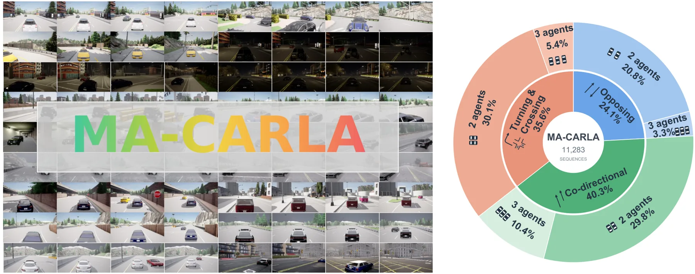
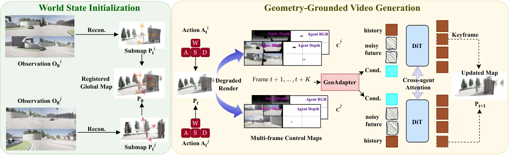
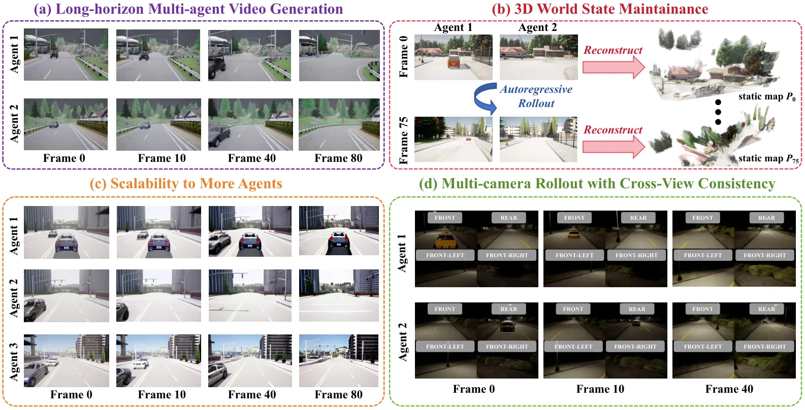
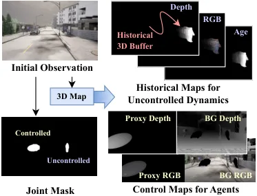
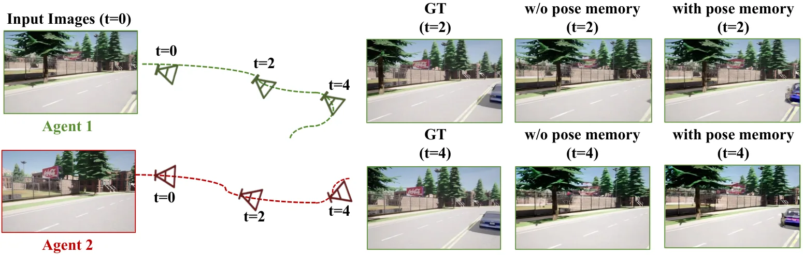
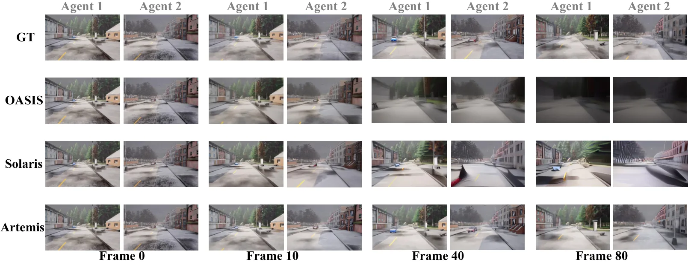

Artemis：基于共享 3D 状态与渐进记忆更新的几何锚定多智能体驾驶世界模型
Artemis: Geometry-Grounded Multi-Agent Driving World Models with Shared 3D State and Progressive Memory Update
用可渐进更新的显式 3D 世界地图作为多智能体共享状态，把静态背景、受控前景代理与不受控动态分别渲染成控制图经 GeoAdapter 注入 Wan2.2-5B DiT，并用关键帧渐进更新地图、用相对位姿记忆恢复视野外智能体；MA-CARLA 上 PSNR 17.74/SSIM 0.566，明显优于 Solaris 与 OASIS。
PSNR/SSIM
LPIPS
sequences
RGB images
作者、单位与技术谱系 · Research context
作者与单位
研究脉络
- Wan2.2-TI2V-5B（Wan et al., 2025）方法基座关系：直接以 Wan2.2 视频扩散 transformer 为生成骨干，GeoAdapter 与跨注意力层注入其中。[论文 §4.1、§5.1]
- Solaris（Savva et al., 2026）多智能体共享自注意力问题上游关系：被本文定位为隐式跨智能体关联的代表，是需要用显式几何改进的对照基线。[论文 §1、§2、§5.2]
- LingBot-Map / Geometric Context Transformer（Chen et al., 2026b）方法上游关系：流式前馈 3D 重建为本文提供共享静态地图的初始化与深度/位姿估计。[论文 §3.2、§4.2.1]
- Diffusion Forcing（Chen et al., 2024）/ Self Forcing（Huang et al., 2025）方法基座关系：为多智能体在线 rollout 提供训练配方（含 Stage 3 的 DMD 式因果蒸馏）。[论文 §5.1]
合作网络
- Oxford ↔ Cambridge ↔ Twente ↔ NUS ↔ Bath 跨机构共同署名University of Oxford（Shen、De Martini） → University of Cambridge（Liu、Tewari、Kristensson）等五家单位关系：共同署名[arXiv 首页署名]
- Cambridge 内部同单位署名Jiuming Liu → Ayush Tewari / Per Ola Kristensson关系：共同署名（同单位）[arXiv 首页署名]
- 团队前作链（Liu et al. 2026b/2026c/2026d）Jiuming Liu / Mengmeng Liu 等 → 交互式视频世界模型综述、UNIVERSE、DriveVA关系：同作者相关前作（基于来源的解读）[论文 §2 与参考文献]
- 对 Wan2.2、LingBot-Map、Grounded-SAM2、DA3 的技术依赖Artemis → Wan2.2-TI2V-5B / LingBot-Map / Grounded-SAM2 / Depth Anything 3关系：明确技术依赖（非共同署名）[论文 §3.2、§4.1、§5.2]
作者与单位来自论文首页署名（含等贡献与通讯标注，作者顺序按抽签确定）；谱系依据正文引用与同作者作品标注为“基于来源的解读”。合作边仅记录共同署名与公开技术依赖，未发现公开的导师/师生关系，故不推断。
方法本质拆解 · What actually changed
是不是微调？
是在预训练 DiT 上做三阶段训练：骨干为 Wan2.2-TI2V-5B，Stage 1 用配对 CARLA 视频与 15 通道几何控制图训练双向模型（AdamW lr 4e−5、200 warmup、32×H20），Stage 2 从 Stage 1 继续微调（lr 2e−5、400 warmup，81 帧、256×416、flow matching、γ=5.0），Stage 3 用 DMD 式蒸馏把因果生成器压到 5 帧块、2 步去噪以支持在线 rollout。因此权重确实被大改：既有对 DiT 的双向训练/微调，也有对新增 GeoAdapter 与跨注意力层的训练；几何重建前端（LingBot-Map、Grounded-SAM2）作为条件来源使用。
有没有额外约束？
新增约束作用在生成条件与状态更新上：把静态地图、受控代理、不受控历史渲染成 24 通道控制张量（背景/前景 RGB、深度、合成掩码、历史 RGB/深度/年龄），经 GeoAdapter 以残差特征投影注入 DiT 选定层；多相机时加 token 对齐的 ray-map；世界地图用低重叠关键帧渐进更新、不受控动态用 FIFO 3D 缓冲区、受控智能体用相对位姿记忆与位姿引导可见性检验约束其存在与插入。约束作用在潜空间特征与显式 3D 状态上，不改变输入动作接口。
推理/后端到底做了什么？
在线推理是逐块自回归 rollout：按 5 帧去噪块生成 81 帧、33 帧历史窗、50 步 Euler、guidance η=1.0；每块后选取关键帧渐进更新共享静态世界地图，更新不受控动态的 3D 历史缓冲，并把干净的生成潜码写入每智能体的 KV-Cache 作为隐式历史记忆；若某受控智能体当前不可见但规划位姿将进入视野，则用位姿记忆初始化其代理。它没有显式的 BA/因子图后端，几何一致性由“显式 3D 状态 + 控制图注入 + 渐进地图更新”共同保证。
方法本质是什么？
本质是：把“跨视角一致性”从一个注意力/后处理问题，转成一个显式共享 3D 状态问题——各智能体观测只是同一 3D 世界地图的不同投影，因此先生成/维护这张地图，再把它的前景/背景/动态分解渲染成几何控制注入生成器，并用关键帧与位姿记忆让它随时间渐进更新。它改变的是生成模型对“几何与位姿”的依赖方式（从隐式关联变为显式控制），靠统一地图把多智能体的输出锚到同一几何；没有引入独立优化后端，也没有改变动作输入。
输入为多智能体初始观测、动作与（可选的）多相机图像；改变的位置是重建并渐进维护一份共享 3D 世界地图，把它分解渲染成前/背景与不受控动态控制图，经 GeoAdapter 注入 Wan2.2-5B DiT；合并动作是每 rollout 块选低重叠关键帧更新地图、用相对位姿记忆恢复视野外智能体、并在 KV-Cache 中累积历史；直接效果是跨视角一致的 2D 视频与 3D 点图同时 rollout，MA-CARLA 上 PSNR 17.74/SSIM 0.566 显著优于 Solaris 与 OASIS。

动机与问题Motivation
动机与问题
论文指出多智能体世界模型的三个挑战：其一，缺乏跨视角一致性的显式几何约束——环境与动作触发的事件应在所有智能体视角下一致演化，需要全局一致的几何与外观理解，但 MultiWorld 等仍依赖隐式交叉注意力，几何线索不足；其二，记忆共享有限——不同智能体在同一共享世界中行动、历史帧可能高度重叠，但现有方法基本不考虑当前时刻以外的跨智能体几何共享；其三，场景复杂度与动态被过度简化——多数方法在简化的合成游戏场景中评测，难以扩展到复杂智能体数量、记住视野外动态、处理严重遮挡。作者据此提出把显式 3D 世界地图作为共享状态，并设计几何注入与渐进记忆共享来逐一破解。
方法Method
方法总览
Artemis 先用流式前馈重建模型 LingBot-Map 从各智能体首帧观测重建子图并注册到公共坐标系，初始化共享静态世界地图；给定动作（表示为相对当前相机位姿的 SE(3) 变换 ΔT(aⁿ)），对每个未来位姿渲染出背景（退化 RGB、深度、可见性掩码）与前景代理（RGB、深度、掩码），并对不受控动态用它自己多帧历史缓冲区经时间窗重投影得到历史 RGB/深度/年龄图，合成一个 24 通道控制张量（背景 RGB/深度、代理 RGB/深度、合成掩码、历史 RGB/深度、年龄）。GeoAdapter 用 VAE 编码 RGB/深度/年龄、对掩码做最近邻下采样，再经残差特征投影注入预训练 Wan2.2 5B DiT 的选定层；另设跨注意力层在潜空间做智能体间通信。每次 rollout 后选取“引入未见内容或与历史低重叠”的关键帧渐进更新世界地图。
关键技术细节
控制张量的构造是可核查的核心：对每个观察者 n 的将来位姿 Tⁿ_{t+k}，静态地图 P_t 渲染得背景 B、前景代理集合 Q 渲染得 F，掩码 Mⁿ=Mⁿ_hole∨Mⁿ_obj 同时标出“新暴露区域”与“仍需合成的动态前景”；不受控动态的时间窗 S(t+k;a) 含离线预处理（a=t+k）与在线推理（a 为下一 rollout 块边界）两种定义，年龄掩码 H_age 是年龄加权软覆盖图。多相机设置下额外提供 token 对齐的 ray-map 相机几何。世界更新分三路：静态地图用新生成视频中低重叠关键帧重建子图并合并；不受控动态用 FIFO 3D 历史缓冲区保留最新帧并外推未来位置；受控智能体维护跨 rollout 块的历史位姿，并在“当前帧无代理但其规划位姿将进入视野”时，用位姿引导验证初始化一个保守的车辆形高斯代理，从而生成新出现的受控智能体。训练为三阶段：Stage 1 在配对 CARLA 视频上用 15 通道几何控制图训练双向模型（lr 4e−5、200 warmup、cosine、32×H20）；Stage 2 从 Stage 1 继续微调（lr 2e−5、400 warmup）；两阶段均 81 帧片段、256×416、flow matching、1000 步、flow shift γ=5.0；Stage 3 用 DMD 式蒸馏优化因果生成器（5 帧块、2 步去噪）。在线推理按 5 帧去噪块、33 帧历史窗、50 步 Euler、guidance η=1.0 逐块生成 81 帧。

实验Experiments
实验设置
数据为自建 MA-CARLA：由 CARLA 渲染，含 11283 条序列、源自 2478 条唯一同步轨迹，覆盖 8 个城镇与 17 种天气；含 6020 条静态背景双智能体序列、3382 条含非智能体动态背景的双智能体序列、1881 条三智能体序列；每序列 256 个同步时间戳，每车 4 视角（前、前左、前右、后）800×600，两智能体序列约 1930 万张 RGB。对照基线为多智能体世界模型 Solaris（隐式共享自注意力）与迁移 OASIS 思路的通道拼接方案（Solaris 另跑一个微调版本）。指标共八项：外观保真用 PSNR/SSIM/LPIPS；多智能体一致性用 DA3 从生成视频估计深度/内参/位姿后再算 Subject Consistency、Background Consistency，另报 Aesthetic Quality 与 Imaging Quality。所有实验基于 Wan2.2-TI2V-5B DiT 骨干。
实验数字与比较
表 1（MA-CARLA 定量）：Artemis PSNR 17.743、SSIM 0.566、LPIPS 0.309，优于微调 Solaris（16.015/0.522/0.414）与 OASIS（13.459/0.500/0.530）；一致性上 Artemis Subject Consistency 0.902、Background Consistency 0.949，微调 Solaris 为 0.896/0.953；Aesthetic 0.536 对 Solaris 微调 0.502，Imaging 0.568 对 0.581。论文称相对 Solaris “SSIM 近乎翻倍、LPIPS 近乎减半”。消融（表 2）：去掉 proxy 深度 PSNR 17.5823/SSIM 0.5613/LPIPS 0.3161；去掉 proxy RGB 17.3938/0.5555/0.3287；去掉 ray-map 17.5284/0.5601/0.3263（Subject Consistency 掉到 0.8902）；去掉静态地图更新 17.7429/0.5666/0.3092（一致性降）；改用分离静态地图 17.7236/0.5657/0.3093；截断 KV-Cache 17.6488/0.5628/0.3167；完整 17.7429/0.5662/0.3085。定性上 OASIS 在驾驶场景几乎全模糊，Solaris 约能生成约 10 帧合理几何但长时域出现伪影，Artemis 在长序列仍保持准确；并支持多相机与三智能体 rollout、可同时维护 2D 视频与 3D 点图。
消融/失败边界
消融指出去掉哪一模块会带来什么变化：去掉深度相关条件（proxy 深度）会一致降低重建质量，说明动态代理深度提供互补几何引导；禁用在线世界地图更新会损害背景与主体一致性（因为累积的生成误差无法被新观测内容纠正，导致视角重建质量下降）；把 KV-Cache 截断到更少历史帧也会降低感知质量与一致性，说明因果 KV-Cache 对保持连贯的自回归历史很重要；去掉 ray-map 主要伤 subject consistency（0.9021→0.8902）。失败边界：论文承认现有方法在“复杂世界分布下的严重遮挡、记忆视野外动态、扩展智能体复杂度”上泛化不确定，这也是自建 MA-CARLA 的动机；且多智能体基线多为闭源，作者只能以 Solaris 与 OASIS 式通道拼接作为代表性对照，长时域一致性仅有定性图（图 6）支撑，缺少跨数据集的定量长时程指标。
局限与迁移Limitations & Transfer
局限与待核验
作者明确承认的点：多数多智能体世界模型仍在简化的合成游戏场景评测，真实世界泛化不确定；两个以上智能体需要身份感知的目标匹配（用投影轨迹、代理轨迹预测、深度一致性与图像空间距离），在复杂交互下可能失效；论文将三智能体与多相机结果以在线推理示意图（图 8）呈现，定量只在双智能体静态/动态背景上给出。我们待核验项：(a) 世界地图与代理均由前馈模型（LingBot-Map）与 Grounded-SAM2 提供，其深度/掩码误差对最终一致性的传播未做定量敏感性分析；(b) 三阶段训练与 DMD 蒸馏的超参完整复现需官方代码（本仓库未获取代码）；(c) 论文以自建 MA-CARLA 为主，缺少在真实驾驶或公开多视角数据集上的跨域验证；(d) 一致性指标依赖 DA3 估计的位姿/深度，评测器本身的误差未单独量化。
与你研究路线的关系
可迁移模块有三处：第一，把“跨视角一致的显式 3D 地图”当作多个观测者共享的可更新状态——这与你在多传感器/多智能体融合里维护统一的几何状态、并用新观测渐进更新地图（而非一次性融合）的思路直接同构，可借其“关键帧选择（未见内容/低重叠）+ 子图合并”的地图更新准则。第二，前景/背景/不受控动态三分解的控制信号设计，提供了一种“把场景拆成静态几何、受控动态、不可控动态并分别条件化”的结构化先验，对你在动态场景下的状态估计与异常动态处理有参考价值。第三，相对位姿记忆 + 位姿引导可见性检验用于“恢复视野外/被遮挡目标”的机制，与你在退化/遮挡下的目标维持与再识别问题相关。下一步实验建议：(1) 在自建多传感器数据上做最小 A/B——统一 3D 状态 + 渐进更新 vs 逐帧独立融合，量化长序列一致性；(2) 复现其关键帧选择准则（低重叠优先），检验对你地图更新/闭环的增益；(3) 借鉴受控/不受控动态的分离条件化，设计面向 GNSS 遮挡与动态干扰的显式状态分层。







